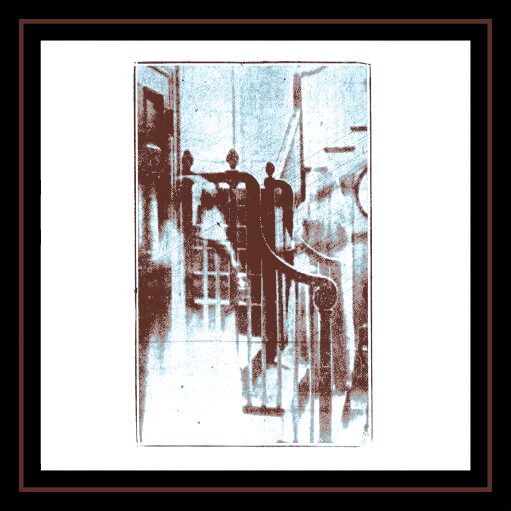

brandon dunlap & body of research - weight on the banister
catalog: ar-013
year: 2022
format: cassette
Paranormal investigation recordings from the Shanley Hotel in Napanoch, NY on 4/20/21 and 3/5/22. Piano recorded at the Bellaire House in Bellaire, OH on 3/21/22. Recorded by Brandon Dunlap, Sky Semone, and Michael Slyne (The Family Stoned / Mini Raining).
Limited edition of 15 cassettes. Covers made from a curtain salvaged from an abandoned hospital.
1. (here's your) rotting signal
2. sitting room
3. pay for life
4. no name (we saw light)
5. after egypt
6. half alive portrait
7. seance
8. c.f.h.
2. sitting room
3. pay for life
4. no name (we saw light)
5. after egypt
6. half alive portrait
7. seance
8. c.f.h.
*** cassette available on bandcamp ***